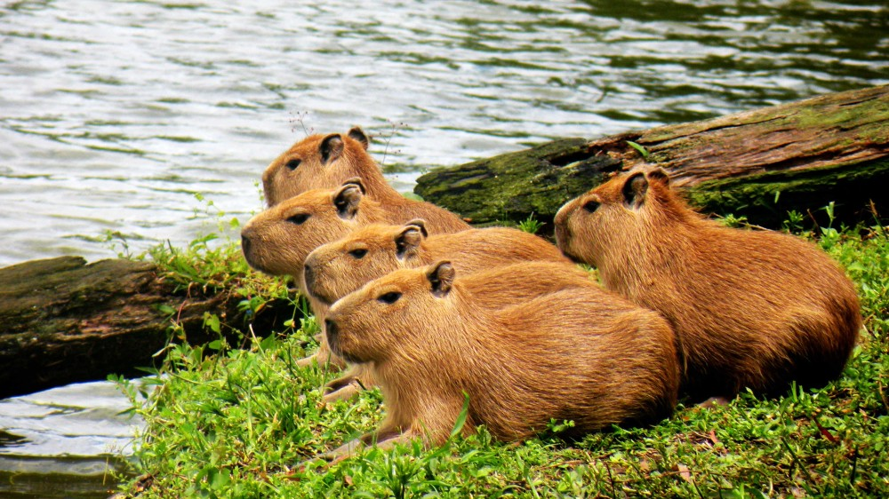
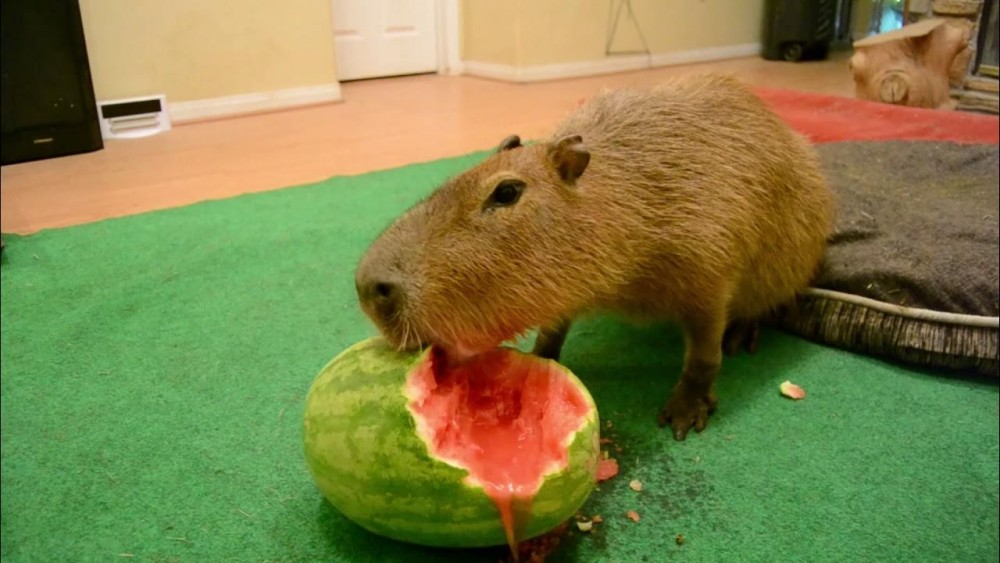

What is a Capybara?
The capybara is the largest living rodent, native to South America. It is a member of the genus Hydrochoerus.
Its scientific name is Hydrochoerus hydrochaeris and it is a herbivore. It has an average life span of up to
7 years in the wild. It is 4.6 feet long: up to 2 feet high at shoulders and 77 - 143 pounds.
Habitat and Distribution
Capybaras prefer areas with access to water, such as rivers, lakes, ponds, marshes, and swamps.
They also need dense vegetation for shelter and foraging.
They are adaptable and can be found in various habitats as long as there is a water source nearby.
They are found in countries like Brazil, Venezuela, Colombia, Argentina, Peru, and Guyana.
Their distribution spans from Panama in the north to northern Argentina and Uruguay in the south.
Social Behavior and Lifestyle
Capybaras are highly social animals that typically live in groups, often numbering around 10-20 individuals,
but sometimes exceeding 100 during the dry season. These groups usually consist of several adult males,
multiple adult females, and their offspring. They utilize a range of vocalisations, including barks similar to dogs,
and body language to maintain group dynamics and express social cues. While dominance exists, capybaras generally
exhibit a relatively tolerant social behavior towards each other, even within the group.
Click the image to hear the capybara speak!
Diet and Feeding Habits
Capybaras are herbivores, primarily eating grasses and aquatic plants.
They graze on these plants and also consume fruits and vegetables, particularly in captivity.
A key part of their digestive process is coprophagy, the eating of their own feces,
which allows them to extract more nutrients.
